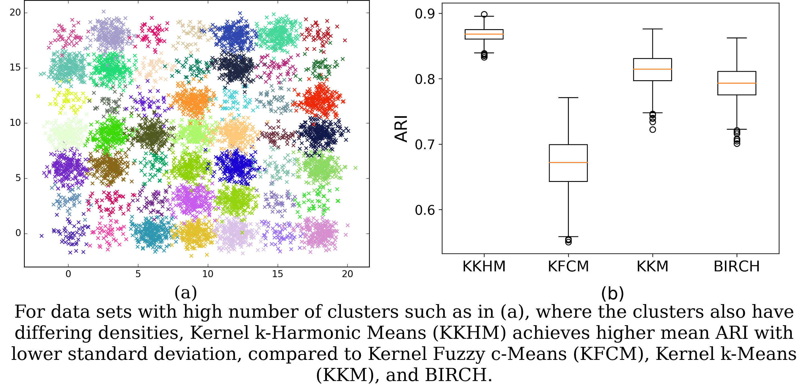

Research
My doctoral thesis (available here) focused on center-based clustering methods, that operate in an unsupervised or weakly supervised manner.
-
Multiple Kernel Transfer Clustering (Github): In the source task a multiple kernel metric is learnt under weak supervision, and transferred to the target task where a data set is clustered.
-
Entropy c-Means Clustering (Github): A multi-objective fuzzy clustering method to identify clusters at different levels of overlap.
-
Estimating the number of clusters using the Last Leap and the Last Major Leap (Github)
-
Kernel k-Harmonic Means Clustering (Github): An extension of the k-Harmonic Means clustering method to incorporate the use of kernel similarities to identify clusters.


